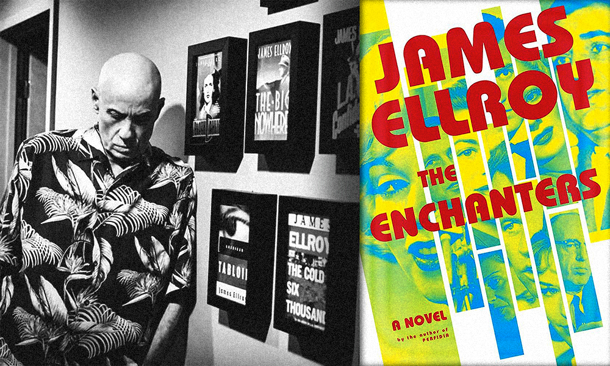

How many ways can people do crime? Innumerable. What types of crime do people tend to write about? That's a smaller subset. There are some things common to our depictions of criminality: the vicarious revealing of motive, means, and opportunity for example; but sometimes the explorations go deeper. Stories can examine the impact of crime. They can also examine the impact of our responses to it.
Do you care about justice? I'm sure you do. It's not always a very just world, of course, and injustices come in large and small portions, but on the whole we want right to win out over wrong. But that's not always the draw of crime fic, is it? Sometimes we want what feels good, even when we know it's very, very wrong…
Talented Tom Ripley; avaricious Patrick Bateman; peckish Hannibal Lector; literature has always found focus in aberrant personalities, often as charismatic as they are disturbing. But criminals need not be suave and sophisticated to attract us – the chance to walk in someone awful's shoes, to learn how an unthinkable thinks… our temptations are as hard to resist as theirs.
Some fairy tales are cautionary, others throw caution to the wind and dive into the nasty stuff with relish. This story is more about The Nasty, if you take my meaning, and the condiments are pickled. If you're reminded of 'The Boy Who Couldn't Shudder' by the Brothers Grimm you're right – though this is more the Brothers Grimy.
Laws can be written, and rules can be unwritten, and sometimes breaking those rules is more bad form than criminal, and surely breaking some laws hardly rises to the level of 'a crime'… yet the law IS the law, and rules are rules however informal. Transgressions have consequences.
Although we've steered clear of the speculative in this issue, our final piece of the year teeters on the edge, just in that way of being not obviously the real world. And is it crime fiction? Well, you know when someone says of something 'That's criminal, that is' – maybe it's crime fiction like that.

For as long as your editor has known him, Bill Ryan has been an eloquent critic of both cinematic and literary crime. When I decided to wrap up the year with our first all-crime issue, there was no-one else I'd turn to for a longform fiction review. I hope you like the hard stuff, and you like it strong.
In keeping with the issue's theme, we're taking a break from reviewing speculative stories to instead scour the web for free-to-read shortform crime fiction. So here's a trio of pieces published this year by some genre zines not Ellery Queen's.